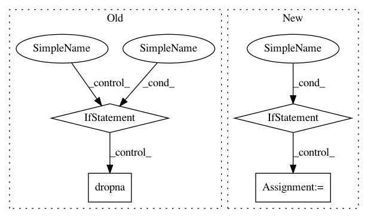

cc90537678b828c9e3122cbe1d39145b49a35344,featuretools/entityset/entityset.py,EntitySet,add_last_time_indexes,#EntitySet#,1004
Before Change
keep="last",
inplace=True)
lti_df.set_index(entity.index, inplace=True)
if entity.last_time_index is None:
entity.last_time_index = lti_df["last_time"]
else:
lti_df["last_time_old"] = entity.last_time_index
entity.last_time_index = lti_df.max(axis=1).dropna()
entity.last_time_index.name = "last_time"
explored.add(entity.id)
//////////////////////////////////////////////////////////////////////////////////////////////////////////////////////////////////////////////////////
// Other //////////////////////////////////////////////////////////////////////////////////////////////
After Change
while len(explored) < len(self.entities):
entity = queue.pop(0)
if entity.last_time_index is None:
if entity.has_time_index():
lti = entity.df[entity.time_index].copy()
else:
lti = entity.df[entity.index].copy()
lti[:] = None
entity.set_last_time_index(lti)
if entity.id in children:
child_entities = children[entity.id]
// if all children not explored, skip for now
In pattern: SUPERPATTERN
Frequency: 3
Non-data size: 4
Instances
Project Name: Featuretools/featuretools
Commit Name: cc90537678b828c9e3122cbe1d39145b49a35344
Time: 2018-01-18
Author: 5392142+rwedge@users.noreply.github.com
File Name: featuretools/entityset/entityset.py
Class Name: EntitySet
Method Name: add_last_time_indexes
Project Name: bashtage/linearmodels
Commit Name: a0be73979eded2a2cea2fd526ea5db87b1abf3c5
Time: 2020-01-20
Author: kevin.k.sheppard@gmail.com
File Name: linearmodels/system/results.py
Class Name: SystemResults
Method Name: _out_of_sample
Project Name: hachmannlab/chemml
Commit Name: f0a4b4d03fd700c96800dd1d68a2cc0dfc182f83
Time: 2017-01-04
Author: mojtabah@buffalo.edu
File Name: cheml/preprocessing/handle_missing.py
Class Name: missing_values
Method Name: transform